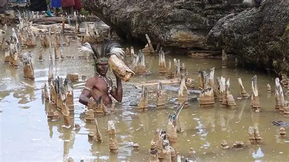
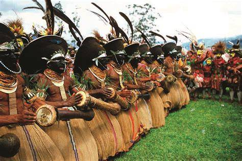
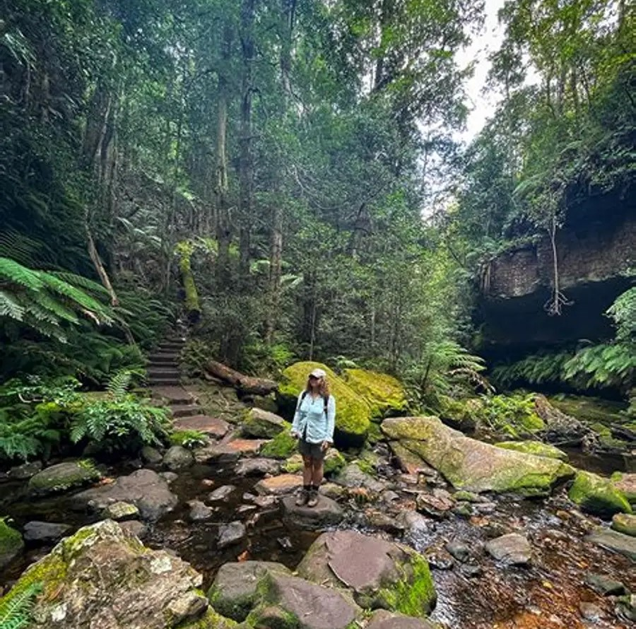
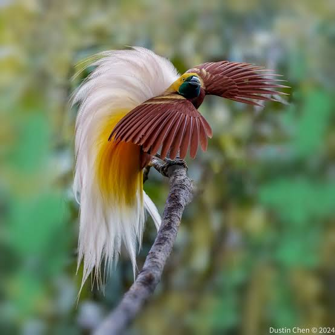

Our tourist sites

Enga Salt Pond
Visit the salt pond and see how salt is traditionally made and used. A local host explains the process and its importance to the community.
- Local host and interpreter
- Transport to and from the site
- Respectful photography briefing

Enga Cultural Show
Watch groups from across Enga perform traditional songs and dances in full dress. We arrange seats, transport and a guide to explain what you see.
- Reserved viewing area
- Guide to explain dances and dress
- Lunch and transport package

Mountain Hiking
Walk mountain tracks and trails with an assistant scout who knows the route, weather and local landowners.
- Assistant scout for each group
- Safety briefing and first aid kit
- Transport to the trailhead

Bird Watching
Go out at first light with a spotter to look for forest birds. Bring binoculars and a camera. We provide the guide and the ride.
- Early morning departure
- Spotter who knows bird calls and locations
- Tea and snacks on site
Supporting services
Assistant scout for tracks and trails
Navigation, safety and local introductions for every hike.
Transport around Enga
Vehicles and drivers for site tours, airport pick-ups and transfers.
Lodge for tourists
Rooms with beds, bedding, hot meals and safe parking.
| Package | Duration | Price | Includes | Salt Pond Visit | Half day | K150 | Host, transport |
|---|---|---|---|
| Cultural Show Package | 1 Day | K300 | Seat, guide, lunch, transport |
| Bird Watching Trip | Half day | K200 | Spotter, transport, tea |
| Mountain Hiking Tour | 2 Days | K450 | Scout, transport, meals, lodge night |
| Service | Route | Price |
|---|---|---|
| Airport pick-up | Airport to Wabag lodge | K120 per vehicle |
| Site tour transfer | Lodge to any tour site and back | K80 per person |
| Full day vehicle hire | Anywhere in Enga Province | K600 per vehicle |
| Room type | Sleeps | Price per night |
|---|---|---|
| Single room | 1 | K150 |
| Double room | 2 | K220 |
| Group dormitory | 6 | K70 per person |
| Time | Day 1 | Day 2 |
|---|---|---|
| Morning | Pick up from lodge, drive to trailhead | Early bird watching walk |
| Afternoon | Hike with scout, rest stop and lunch | Return hike and transport back |
| Evening | Dinner and lodge night | Check out and departure |